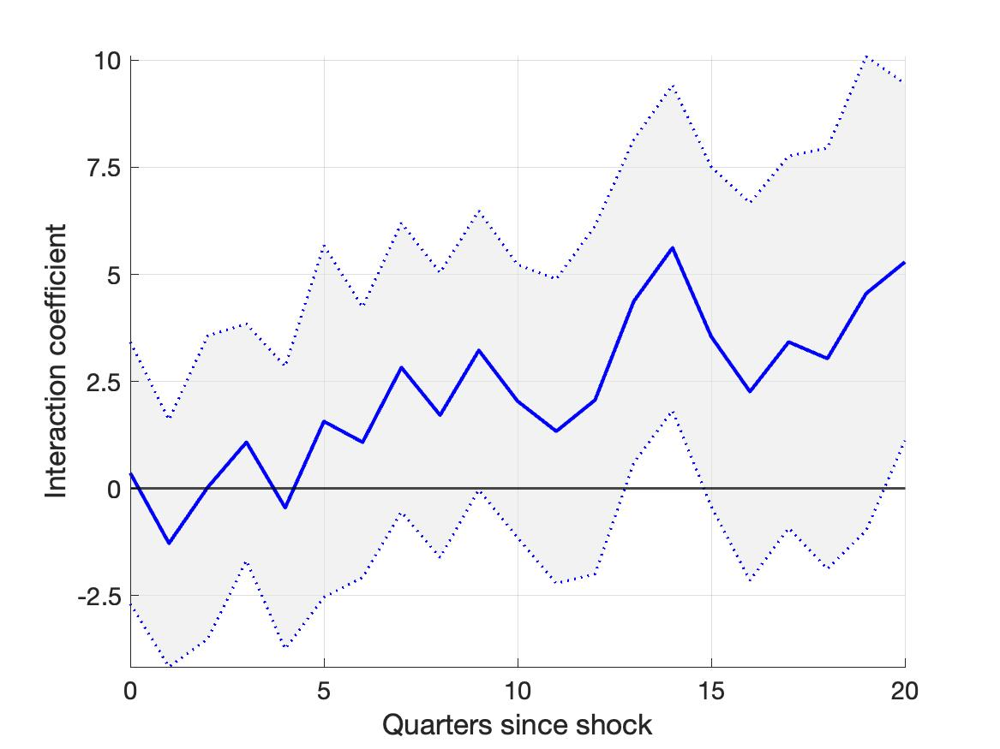
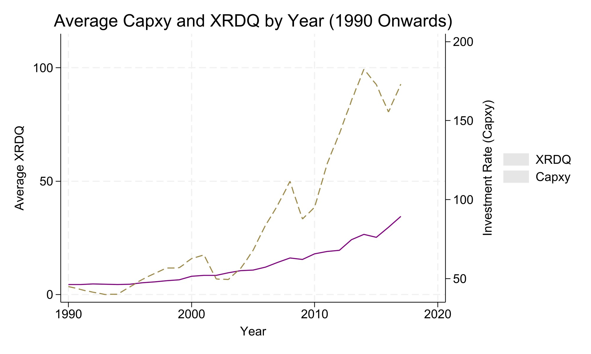

Monetary Policy and Firm Innovation
This paper studies how monetary policy shapes firm-level innovation, using linked Compustat, USPTO and CRSP data with local projection methods. The R&D response to monetary policy operates almost entirely through the intensive margin: expansionary shocks raise R&D and knowledge capital among firms already engaged in innovation, while other firms remain largely unresponsive. On the output side, expansionary shocks lower the aggregate number of patents but raise average citations and, over the medium run, patent importance and the share of patents in the upper tail of the importance distribution, consistent with firms reallocating R&D from incremental patenting toward higher-impact projects as financing conditions ease. A two-stage analysis indicates that this reallocation operates through the R&D response itself rather than through a direct effect of the shock on patenting. The effects are also asymmetric in sign: contractionary shocks reduce both the quantity and quality of innovation, and this reallocation-toward-quality channel is cleanest among economically large shocks. Monetary policy therefore changes the direction of firms’ innovation as well as its scale.

Data
The panel joins five sources. CRSP-Compustat gives quarterly financials from 1990 to 2020; USPTO filings give patents granted from 1990 to 2017, with citations, the Kogan, Papanikolaou, Seru and Stoffman market-value measure and text-based importance; and the monetary policy shocks are the high-frequency series used by Ottonello and Winberry, 164 shocks from January 1990 to December 2007. Patent assignees and firm identifiers do not line up cleanly across three decades of mergers and delistings, so a large part of the work was the matching and the change log that lets any estimate be rebuilt from raw files. Knowledge capital is built from R&D by the perpetual inventory method, following Peters and Taylor. The Great Recession is left out of the estimation sample because high-frequency identification stops working at the lower bound.
Method
Local projections trace the response of R&D, knowledge capital and patent outcomes to a shock over twenty quarters. Probit and Tobit models separate the extensive margin, whether a firm starts doing R&D, from the intensive margin, how much an active firm spends. A two-stage design then asks whether the patent response runs through the change in R&D: the first stage fits R&D on the shock, the second regresses patent outcomes on the fitted R&D. Interacting shock sign with shock size separates asymmetry from magnitude.
What the paper finds
- The R&D response is an intensive-margin story. Active innovators spend more after a loosening; the probability that an inactive firm starts cannot be told from zero at any horizon.
- Output shifts from quantity to quality. Patent counts fall in the short run, average citations and importance rise over the medium run, and the share of patents in the upper tail of importance rises with them.
- The shift runs through R&D. Fitted R&D explains the patent response; the direct effect of the shock on patenting adds little once R&D is in the regression.
- Easing and tightening are not mirror images. A contractionary shock lowers both the quantity and the quality of patents, and the quality reallocation is cleanest for economically large shocks.
- Quality measures disagree with each other. Citation and text-based importance rise after a loosening; per-patent market value does not move reliably. Which proxy a study uses changes its answer.
